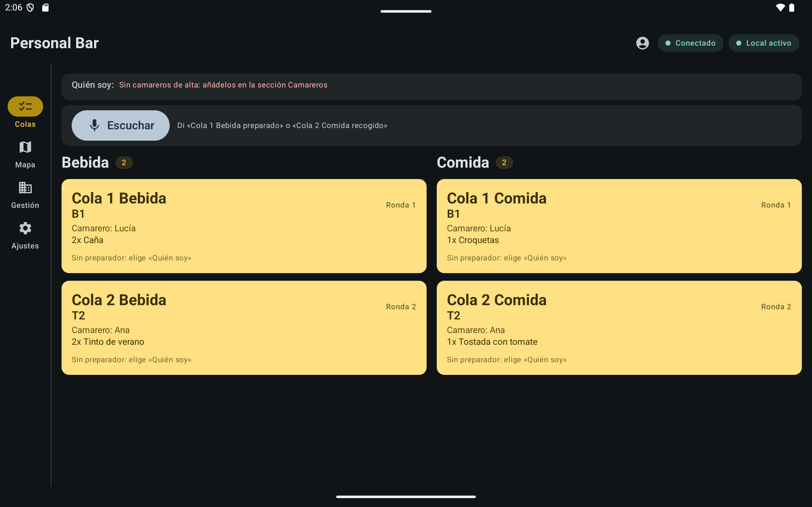
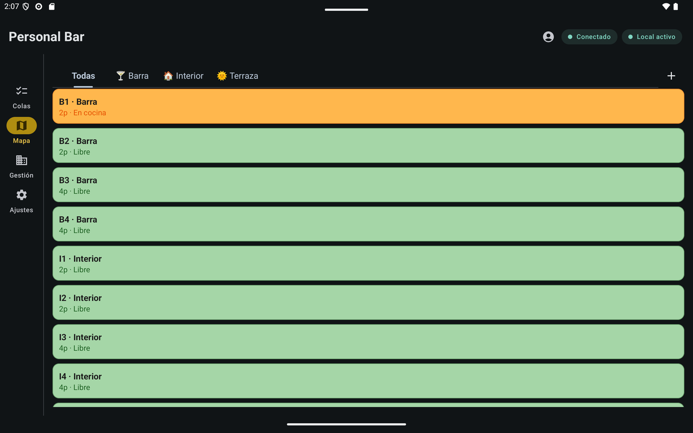
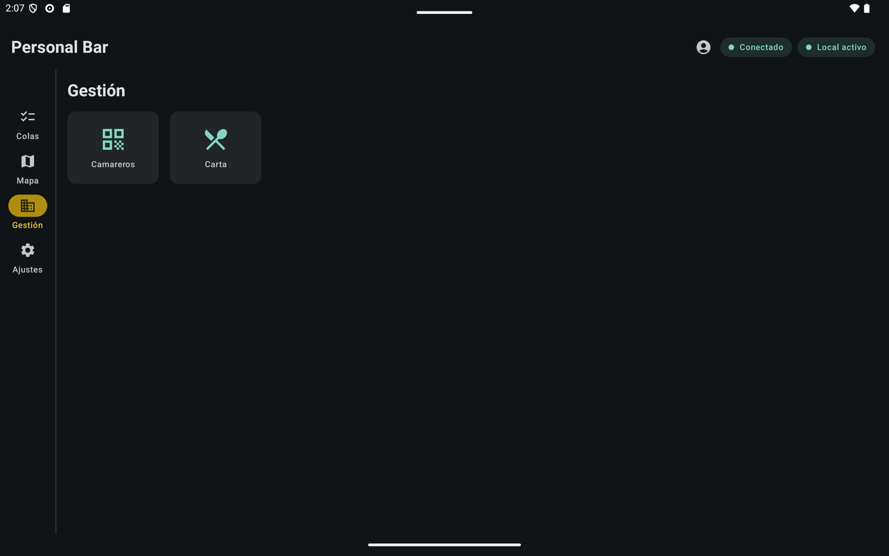
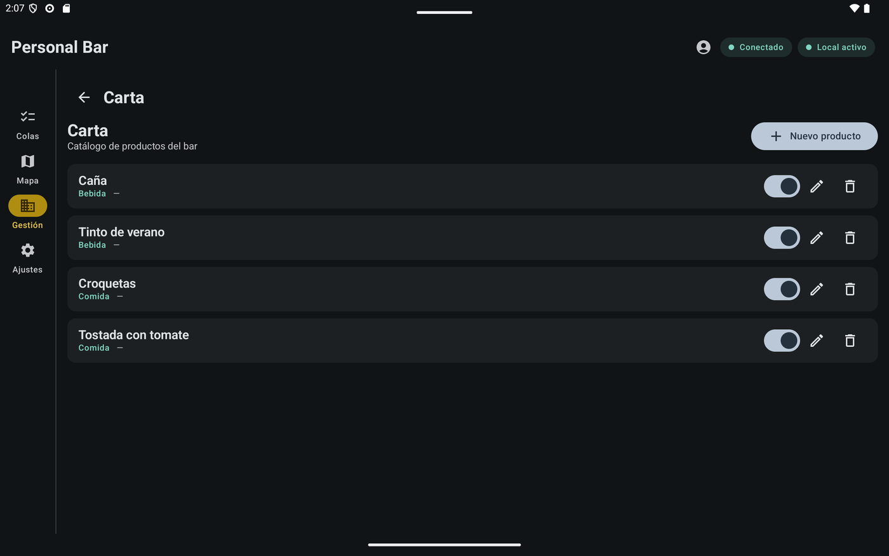
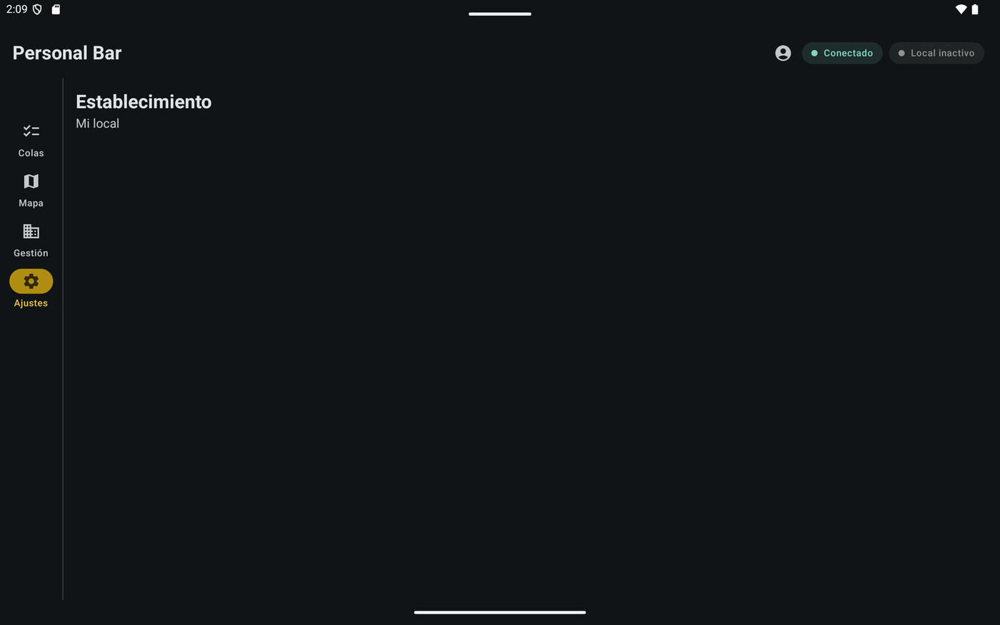

🍸 Personal Bar
El puesto de barra que gestiona la sala.
Colas de Bebida y Comida separadas y nodo LAN de la familia PersonalHostel: los Personal Commander de sala y terraza se conectan aquí, mandan rondas y la barra las prepara y entrega por destino.
v0.3
Corte v0.3 (Android 7.0+, tablet apaisado). El ciclo de la ronda en el puesto; la UI reserva la barra de navegación de 3 botones.
Para la barra
-
 Expo de colas por destino
Expo de colas por destinoBebida y Comida en dos columnas fijas. Cada ticket: mesa, ronda, camarero y líneas. «Preparado» registra quién lo preparó; «Recogido» saca el ticket de la cola.
-
Nodo de sala LAN
Servidor Ktor integrado (puerto 8787). Los Commander se conectan, envían rondas y reciben el estado en tiempo real (SSE). La barra es la fuente de verdad de mesas, rondas y tickets.
-
Lista blanca del local
Alta de camareros por su QR de identidad (PersonalHostel-Server). Sin alta no hay acceso, aunque estén en el Wi‑Fi.
-
Mapa de la sala
Salas y mesas canónicas del establecimiento (barra, interior, terraza…), replicadas a los Commander.
Para el local
-
Gestión
Camareros (lista blanca) y carta del bar desde el hub de gestión, en la propia tablet.
-
Listo por destino
Las cañas no esperan a la pizza: cada destino avanza por su cuenta dentro de la ronda.
-
Marca dark premium
Design system navy & gold de la familia PersonalHostel.
-
:material-cocktail: Voz en la barra
«Lucía, Cola 1 Bebida preparado» — cambia estados de cola hablando, con el nombre del preparador.
Así se ve en acción





Requisitos
- Android 7.0+ (API 24)
- Tablet apaisado (puesto estático de barra)
- Para el nodo: red local con los Personal Commander de sala/terraza